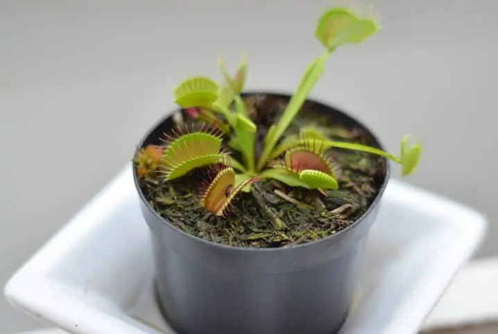
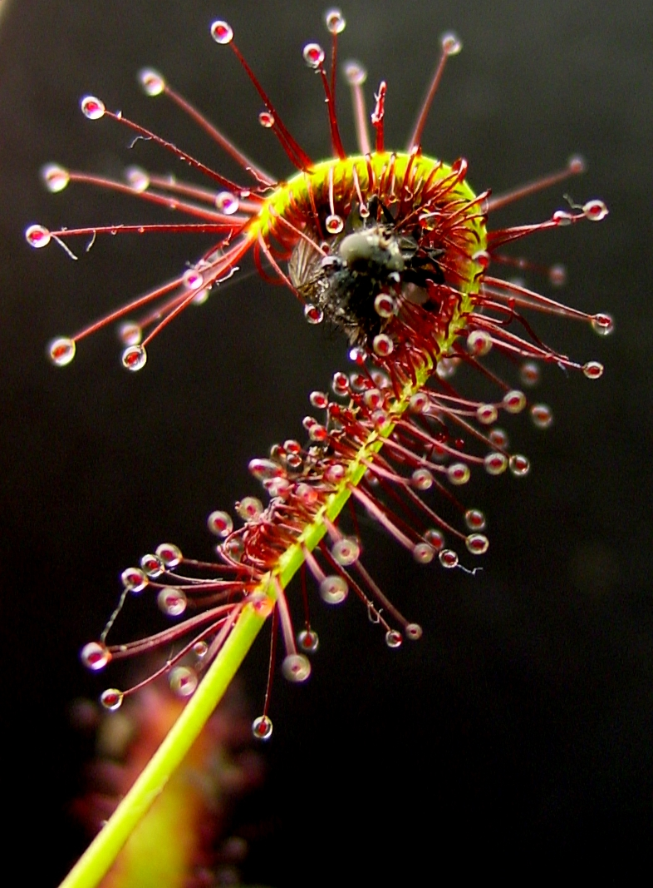
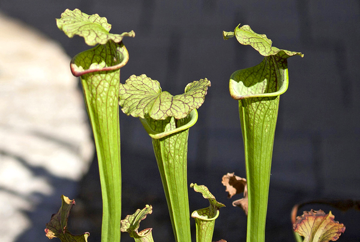

Conheça mais sobre a planta carnívora
Você já ouviu falar sobre a planta carnívora, certo? Talvez, o que você ainda não saiba é um pouco mais sobre a origem desse nome. Também chamada de insectívora, essa espécie captura presas para usá-las como complemento nutricional. Na natureza, podemos observar que diversas espécies se adaptam ao ambiente com extrema facilidade. Elas se transformam de acordo com as necessidades que a sobrevivência em cada território exige. A planta carnívora é resultado desse processo.
O que a planta carnívora come?
Quando falamos sobre essa espécie, a principal dúvida é referente ao que as plantas carnívoras comem. Devido ao solo encharcado e com poucos nutrientes, elas precisaram buscá-los de outra forma. A partir de uma evolução lenta, mas eficiente, passaram a capturar insetos e pequenos animais compostos de nitrogênio.
As Dioneias, por exemplo, são uma das espécies de plantas carnívoras mais conhecidas, principalmente por utilizarem folhas que se fecham sobre as presas. Esse processo é feito a partir do momento que os insetos pousam sobre o corpo da planta.
Cada planta carnívora possui um jeito próprio de se alimentar. As Nepenthes trabalham de uma forma diferente. As folhas são modificadas em formato de urna, atraindo os insetos por meio de uma substância líquida. Já a Drosera conta com tentáculos recheados de substâncias pegajosas, que aprisionam as presas.
Características da planta carnívora
Quer saber mais sobre o que são plantas carnívoras? Como já foi mencionado, elas habitam lugares encharcados e de solo mais pobre, como os brejos, por exemplo. Costumam ser pequenas, chegando até, mais ou menos, 15 cm de altura.
Existem por volta de 600 espécies ao redor do mundo. A maioria pode ser encontrada em regiões tropicais e subtropicais. Há diversos locais com plantas carnívoras: Brasil, sudeste asiático (grande ponto de referência), todo o continente americano, sul da Europa e da África, além da Austrália.
Muitas se alimentam de insetos, como moscas, besouros e formigas. Mesmo com essa alimentação, elas ainda possuem diversas características dos seres vegetais. Por esse motivo, as plantas carnívoras fazem fotossíntese.
Dioneia
Já mencionada anteriormente, a Dioneia é uma das plantas carnívoras mais conhecidas. Ela tem de 5 a 15 cm de altura, sendo uma ótima forma de aprimorar a decoração do ambiente. A boca fica sempre aberta, fechando em questão de segundos somente quando ela sentir uma presa ativa.
Drosera
A Drosera possui um aspecto mais rústico, principalmente devido aos tentáculos e aos pelinhos. Quando uma presa entra em contato com eles, é pega por uma espécie de substância pegajosa, que a aprisiona e a leva até o centro, onde vai ser ingerida.
Sarracenia
Quando se fala sobre resistência, a Sarracenia é uma das que mais se destaca. Ela se adapta a climas mais extremos, diferente do que as outras estão acostumadas. As flores costumam aparecer na primavera, exalando um odor específico para atrair as presas.
